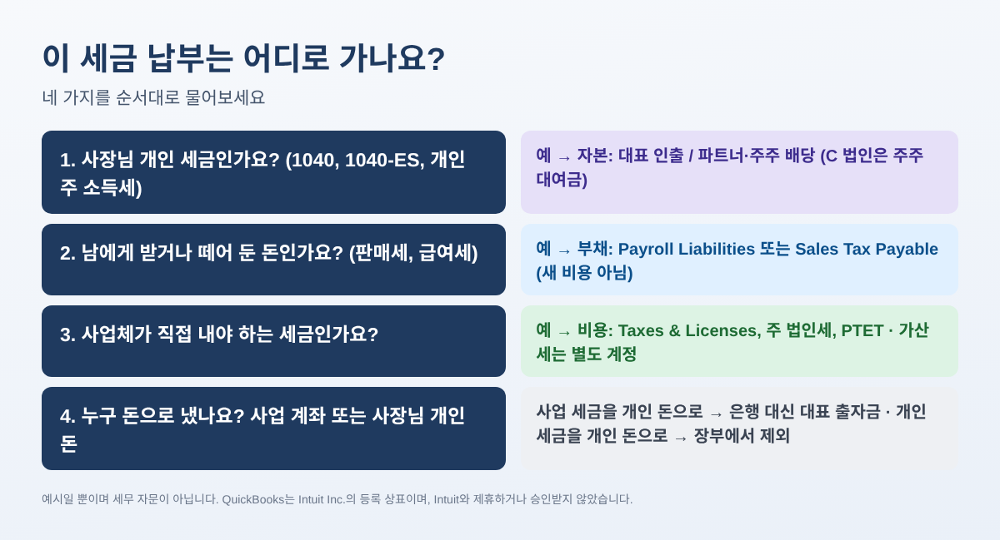
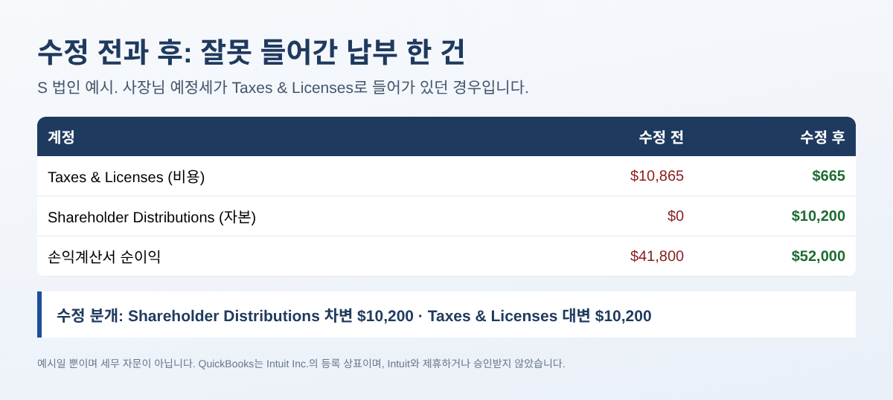
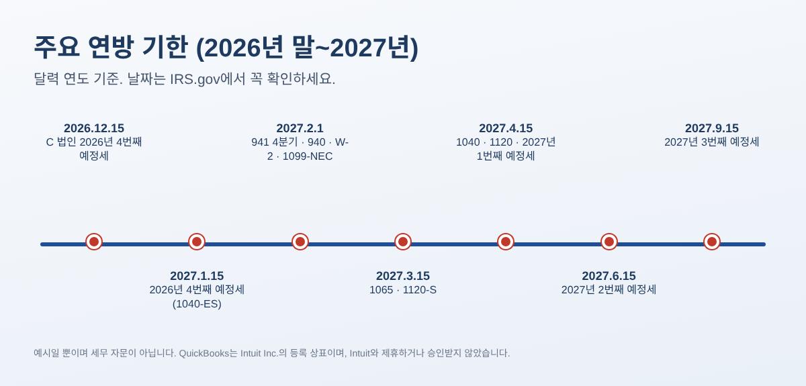

연말에 장부를 열어 "Taxes"나 "Taxes & Licenses" 계정을 보면, 성격이 전혀 다른 납부가 한곳에 섞여 있는 경우가 많습니다. 사장님 개인의 분기별 1040-ES, 직원 급여세 예치, 판매세, 재산세 고지서, IRS 가산세까지 모두 비용 하나로 들어가 있는 식입니다. 이렇게 되면 손익계산서가 실제보다 나빠 보이고, 급여세·판매세 부채 잔액은 끝까지 0이 되지 않으며, 연말 정리에 며칠이 걸립니다.
이 글에서는 QuickBooks Desktop, QuickBooks Online, 또는 엑셀만으로도 직접 할 수 있는 방법으로, 세금 납부 한 건 한 건을 어디에 어떻게 기록하는지 정리했습니다. 개인 2026년 마지막 예정세는 2027년 1월에 내야 하고, 바로 뒤에 급여 연말 서류가 이어집니다. 세무사에게 장부를 넘기기 전에 잘못 들어간 납부를 찾아 두면 훨씬 수월합니다.

S 법인 예시입니다. 금액은 모두 예시입니다.
| 납부(예시) | 금액 | 기록할 계정 | 손익계산서? |
|---|---|---|---|
| 사장님 1040-ES(2개 분기) | $9,000 | Shareholder Distributions(자본) | 아니요 |
| 사장님 주 예정세 | $1,200 | Shareholder Distributions(자본) | 아니요 |
| 941 급여세 예치 | $7,720 | Payroll Liabilities(부채) | 아니요 |
| 분기 판매세 | $2,315 | Sales Tax Payable(부채) | 아니요 |
| 주 PTET(선택적 패스스루세) | $6,000 | PTET Tax Expense(별도 계정) | 예 |
| 사업 재산세 | $640 | Taxes & Licenses | 예 |
| IRS 예치 지연 가산세 | $156 | Penalties(공제 안 됨) | 예, 별도 계정 |
가산세는 꼭 별도 계정에 두세요. 공제 여부는 신고서에서 세무사가 판단할 일이고, 장부의 목표는 종류별로 잘 보이게 나눠 두는 것입니다.
새 화면은 All apps에서 시작하고, 이전 화면은 왼쪽 메뉴에 같은 항목이 있습니다. 아래 경로는 Intuit 도움말 기준입니다.
은행 피드 팁: 은행 내역의 기관 이름 하나에 여러 세금이 섞입니다. 세금 납부에는 자동 은행 규칙을 만들지 말고 지도를 보며 한 건씩 분류하세요.
세금 관련 비용 계정마다 Transaction Detail by Account(또는 QuickReport)를 실행하고, 납부처가 IRS나 주인 건을 찾습니다. 엑셀이나 구글 시트에 날짜, 납부처, 세금 종류, 금액, 행선지 열을 만들어 옮긴 뒤, 행선지별 합계를 냅니다.
=SUMIFS($D:$D,$E:$E,"Owner draw")
=SUMIFS($D:$D,$E:$E,"Liability")
=SUMIFS($D:$D,$E:$E,"Expense")
행선지 열은 작은 규칙표(H열 세금 종류, I열 행선지)를 만들어 =IFERROR(VLOOKUP(C2,$H$2:$I$20,2,FALSE),"CHECK")로 채우면 됩니다. CHECK가 뜨는 줄만 따로 보세요.
| 계정(예시) | 내 목록 | QuickBooks 금액 | 차이 |
|---|---|---|---|
| Shareholder Distributions | $10,200 | $0 | -$10,200 |
| Taxes & Licenses | $665 | $10,865 | +$10,200 |
| Payroll Liabilities(급여세 납부 전체, 환급 $60 차감) | $9,060 | $9,060 | OK |
이 예시는 사장님 예정세 $10,200을 Taxes & Licenses로 넣은 경우입니다. 분개 하나로 고칩니다: Shareholder Distributions 차변 $10,200, Taxes & Licenses 대변 $10,200. 이미 마감했거나 신고를 마친 연도라면 고치기 전에 세무사와 먼저 상의하세요.

환급금은 납부할 때 쓴 계정으로 되돌립니다. 기관이 이자를 붙여 줬다면 입금을 두 줄로 나눠, 세금 부분은 원래 계정, 이자 부분은 Interest Income으로 넣습니다. Online은 + New > Bank deposit, Desktop은 Banking > Make Deposits(급여세는 Deposit Refund Liabilities)를 씁니다.

납부는 돈이 계좌에서 나간 날짜로 기록합니다. 2026년 4분기 예정세를 2027년 1월에 냈다면 2027년 1월 거래이고, 메모에 "2026 Q4"라고 적어 둡니다.
아닙니다. 사장님 개인 세금입니다. 개인사업자는 Owner's Draw, 파트너십은 해당 파트너 분배금, S 법인은 Shareholder Distributions로 기록합니다.
원천징수액은 직원의 돈이고, 고용주 부담분은 급여 처리 때 이미 급여세 비용으로 잡혔습니다. 예치는 그 부채를 갚는 것입니다.
세무사가 찾기 쉽도록 별도 비용 계정에 넣으세요. PTET는 신고 방법이 특별하므로 처리 방법은 세무사와 확인하세요.
분개로 면허비 비용을 기록하고, 사업 계좌가 아니라 대표 출자금(법인은 대표 차입금)으로 대변 처리합니다.
위 과정을 그대로 해 주는 세금 납부 기록 지도 2026(Tax Payment Recording Map 2026)은 아래 무료 키트 다운로드에서 가입 없이 무료로 받으실 수 있습니다(엑셀 + PDF 가이드).
이 글은 교육용 정보이며 세무·법률 자문이 아닙니다. 주와 상황에 따라 규정이 다르니 처리 방법은 담당 세무사와 확인하세요. QuickBooks는 Intuit Inc.의 등록 상표이며, 이 글은 Intuit와 제휴하거나 승인받지 않았습니다. QuickBooks is a registered trademark of Intuit Inc.